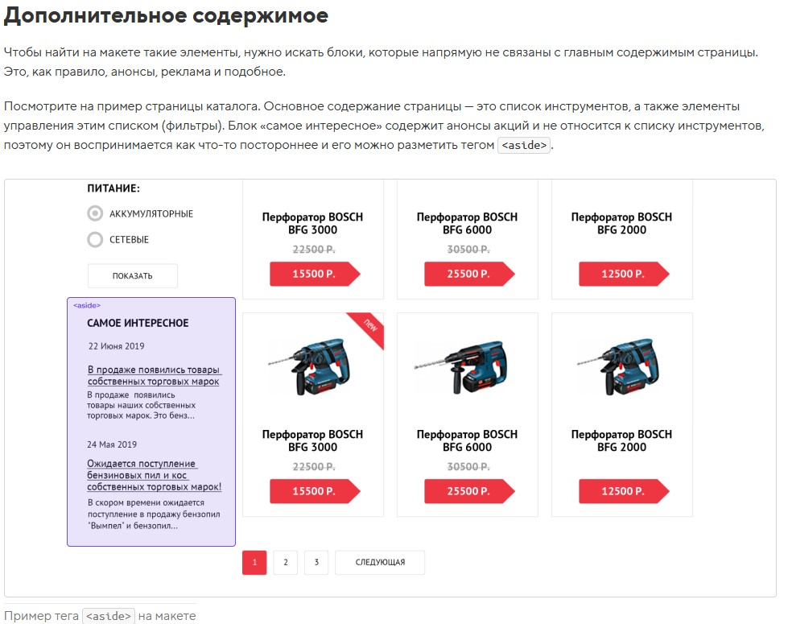

Изменять порядок элементов в разметке нежелательно — с точки зрения семантики, первым должен идти заголовок раздела, а уже потом все относящиеся к нему элементы. Как быть? Изменим визуальный порядок элементов!
header ierarchy
h2
h3
h4
h1 hgroup
h2
h3
h4
h5
h3
h4
h5
h3
h4
h5
h6
h2
figure и figcaption
Для этого отлично подойдёт тег <figure>. Этот тег хорош для любого иллюстративного или демонстрационного материала, которым можно дополнить содержание документа. Таким материалом могут быть схемы, графики, примеры кода, таблицы и так далее.
<figure>
Схема, график, диаграмма или код
<figcaption>Подпись к содержимому</figcaption>
</figure>
Классы у header, footer
Если вы не хотите использовать классы для шапки и подвала сайта, то можете использовать селекторы body > header и body > footer. Эти селекторы не повлияют на хедеры и футеры, вложенные более глубоко.
<header> — это не только привычная шапка сайта с логотипом и меню, но и «шапка» какой-нибудь статьи или раздела сайта, в которой могут содержаться заголовки, оглавление и так далее.
<footer> — это подвал сайта: с копирайтами, контактной информацией и так далее. Но может использоваться и в других разделах сайта, например в статье, чтобы разместить дополнительную информацию: данные об авторе, дополнительные ссылки и так далее
мы можем задать внешние отступы как элементам списка, так и вложенным в них ссылкам. Но внутренние отступы следует добавлять именно ссылкам. Внутренние отступы добавляют ссылкам для того, чтобы увеличить область, по которой можно кликнуть (её ещё называют активной областью). Чем проще попасть по ссылке, тем удобнее интерфейс.
Так как <article> должен быть независимым, то при разметке удобно считать его отдельной и самостоятельной страницей сайта. При этом иерархия заголовков на всей нашей странице должна быть «сквозная», то есть внутри <article> заголовок будет «очередного» уровня. Заголовок родительского раздела <section> у нас второго уровня — h2, значит внутри <article> нужен заголовок третьего уровня — h3.
aside
div
Дивам и спанам классы задаются почти всегда.
Тег div — это универсальный контейнер. В него можно положить любые другие теги и просто текст.
Чаще всего дивы используются для группировки крупных блоков. У этого тега отсутствует собственный смысл, поэтому почти всегда его дополняют «говорящим» классом.
p
У тега p — две основных роли.
Первая роль — это разметка обычных абзацев в текстах. В этом случае этот тег обозначает просто «параграф» или «абзац» и классом не дополняется.
Вторая роль — контейнер для группировки небольших текстовых элементов. В этом случае его дополняют классом.
В чём отличие p и div? Внутри дивов может лежать всё что угодно, любые крупные и мелкие блоки. Внутри p могут находиться только небольшие текстовые элементы.
span
В отличие от предыдущих двух тегов, тег span — это не контейнер, а фрагмент текста. Им можно выделять элементы внутри текстового потока. С помощью div и p такие выделения делать нельзя.
span выделяют словосочетания, отдельные слова, части слов и мелкие текстовые элементы интерфейса. У этого тега отсутствует собственный смысл, поэтому почти всегда его дополняют «говорящим» классом.
Избыток элементов header
Элемент header можно использовать несколько раз в документе.
Если ваш header содержит только один заголовочный элемент, то он не нужен
Не правильно:
‹article›
‹header›
‹h1›Заголовок‹/h1›
‹/header›
‹!-- содержимое статьи --›
‹/article›
Этого будет достаточно:
‹article›
‹h1›Заголовок‹/h1›
‹!-- содержимое статьи --›
‹/article›
Неправильное использование hgroup
Это еще один пример использования элемента без надобности.
Не правильно:
‹header›
‹hgroup›
‹h1››Заголовок‹/h1›
‹h2››Подзаголовок‹/h2›
‹/hgroup›
‹/header›
Единственные ребенок у header это hgroup, тут header без надобности. Если у header не больше одного ребенка то он не нужен.
Этого будет достаточно:
‹hgroup›
‹h1››Заголовок‹/h1›
‹h2››Подзаголовок‹/h2›
‹/hgroup›
inline
- Не реагируют на width и height.
- Частично реагируют на margin, воспринимая только горизонтальные отступы.
- Частично реагируют на padding, воспринимая только горизонтальные отступы.
- При задании вертикальных padding визуально увеличиваются, но без увеличения занимаемого места (не отталкивают другие элементы).
- Воспринимают рамки. Аналогично padding рамки сверху и снизу не увеличивают занимаемое элементом место.
Если зафлоатить строчный элемент, то он начинает вести себя как блочный, а именно: воспринимать размеры и отступы.
абсолютно спозицыонированный инлайн или инлайнблок ведет себя как блочный(принимает высоту и ширину)
inline-block
Снаружи они выглядят как обычные строчные, но внутри они ведут себя как блочные.
- не центруются с помощью
margin: 0 auto; - можно задавать размеры, рамки и отступы, как и элементам с блочным боксом;
- ширина по умолчанию зависит от содержания, а не растягивается на всю ширину контейнера;
- не порождают принудительных переносов строк, поэтому могут располагаться на одной строке, пока помещаются в родительский контейнер;
- элементы в одной строке выравниваются вертикально подобно элементам со строчным боксом.
От строчных им достались следующие черты:
- по ширине они ужимаются под своё содержимое;
- могут располагаться в одну строку;
- реагируют на вертикальное выравнивание, vertical-align;
- реагируют на горизонтальное выравнивание, text-align, заданное у родителя.
От блочных:
- им можно задавать размеры с помощью width и height;
- а также внешние и внутренние отступы и рамки, которые работают во всех направлениях и увеличивают размер элемента.
Каждый элемент с inlune-block воспринимается браузером как один символ или слово, из-за этого между inline-block элементами появзяется отступ, этот отступ это line-height; статья
block
margin: 0 auto;
такое действует только на display: block;(возможно и внутри flex)